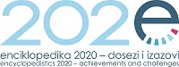

Leksikografski zavod Miroslav Krleža
organizira
MEĐUNARODNI ZNANSTVENI SKUP
ENCIKLOPEDIKA 2020 – DOSEZI I IZAZOVI
INTERNATIONAL CONFERENCE
ENCYCLOPEDISTICS 2020 – ACHIEVEMENTS AND CHALLENGES
U povodu obilježavanja 70. obljetnice osnutka, Leksikografski zavod Miroslav Krleža organizirao je međunarodni znanstveni skup Enciklopedika 2020 – dosezi i izazovi, koji se održao 15. i 16. listopada u Zagrebu.
Pozvani predavači:
Naja Bentzen, Ured za vezu Europskog parlamenta u Washingtonu, DC
Ranko Matasović, Hrvatska akademija znanosti i umjetnosti, Zagreb
Uri Nodelman, Stanford Encyclopedia of Philosophy
Toma Tasovac, DARIAH-EU, Berlin
Eveline Wandl-Vogt, Austrijska akademija znanosti, Beč
Sedamdeseta obljetnica Leksikografskoga zavoda Miroslav Krleža, utemeljenoga 1950. na stoljetnoj baštini hrvatske enciklopedike i leksikografije, povod je za promišljanje dosadašnjih dosega, trenutačnoga stanja i (ne)predvidljive budućnosti enciklopedike u Hrvatskoj, Europi i svijetu. Okupljajući stručnjake, kako u enciklopedici i leksikografiji tako i u pojedinim znanstvenim granama, željeli bismo raspravljati u trima povezanim tematskim cjelinama, napose s obzirom na stanje i mogućnosti digitalne enciklopedike, pojedine struke i nazivlje te enciklopedičku obradbu životopisa, pri čemu navedenu podjelu na podrobnije smjernice valja shvatiti kao poticaj, a ne kao obvezu.
Teme skupa bit će sljedeće:
a) Digitalna enciklopedika i umreženo znanje:
- Mrežne enciklopedije i ostala referentna djela
- Tematski portali
- Digitalizacija i povezivanje digitalnih izvora
- Multimedijski i interaktivni sadržaji
- Uloga digitalnih referentnih djela u znanosti i obrazovanju
- Organizacija, umrežavanje i diseminacija znanja
- Enciklopedika u doba rasta pristupačnosti informacija
- Digitalna leksikografija i digitalna humanistika
b) Struke i nazivlje u enciklopedici i leksikografiji
- Teorijske osnove (metode, pristupi, posebnosti)
- Zamisao i izvedba strukovnih enciklopedija
- Obradba pojedinih struka u općim/nacionalnim enciklopedijama
- Odabrane teme iz pojedinih struka
- Mikropedijski i makropedijski pristup
- Nazivlje između deskripcije i preskripcije
- Nazivlje između internacionalizma i purizma
- Nazivlje u dijakronijskoj perspektivi
c) Biografija u enciklopedici
- Koncepcije biografskih enciklopedija i leksikona
- Biografije u strukovnim, nacionalnim i općim enciklopedijama
- Biografija s obzirom na pojedine struke
- Problemi biografskog istraživanja i prezentacije
- Bibliografska sastavnica
Sažetak (1000 do 1500 slovnih mjesta), na hrvatskom i engleskom jeziku (za strane izlagače, organizator će osigurati prijevod na hrvatski), zajedno sa životopisom (400 do 600 slovnih mjesta) pošaljite tajnici Organizacijskoga odbora, Ivi Klobučar Srbić (Ova e-mail adresa je zaštićena od spambota. Potrebno je omogućiti JavaScript da je vidite.; Ova e-mail adresa je zaštićena od spambota. Potrebno je omogućiti JavaScript da je vidite.), najkasnije do 1. srpnja 2020. O prihvaćanju sažetka izvijestit ćemo Vas do 15. srpnja 2020., a prihvaćeni sažetci tiskat će se u zasebnoj knjižici.
Predviđeno je trajanje usmenoga izlaganja na hrvatskome ili engleskome jeziku 15 minuta. Radovi proizišli iz izlaganja koji se predaju do 1. ožujka 2021. objavit će se, nakon odgovarajućega recenzentskoga postupka, u tematskom broju znanstvenoga časopisa za leksikografiju i enciklopediku Studia lexicographica (http://studialexicographica.lzmk.hr/sl).
Sudionici su oslobođeni kotizacije, a troškove prijevoza i smještaja snose sami.
Organizacijski odbor: Ivana Crljenko, Vlatka Dugački, Filip Hameršak, Zdenko Jecić, Nataša Jermen, Iva Klobučar Srbić i Bruno Kragić
Programski odbor: Petra Bago, Vlaho Bogišić, Damir Boras, Irina Deretić, Peter Jordan, Stipe Kutleša, Janko Lozar, Nives Mikelić Preradović, Željko Pavić, Slaven Ravlić, Krešimir Regan, Hrvoje Stančić, Goran Sunajko, Domagoj Vidović i Antun Vujić
Tehnička potpora: Zdravko Pondelak, Cvijeta Kraus
Kontakt: Ova e-mail adresa je zaštićena od spambota. Potrebno je omogućiti JavaScript da je vidite.; Ova e-mail adresa je zaštićena od spambota. Potrebno je omogućiti JavaScript da je vidite.